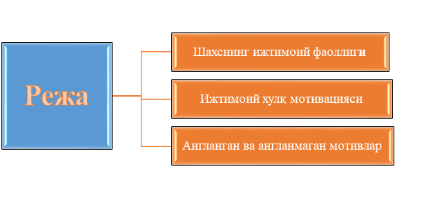

1-Режа. Шахснинг ижтимоий фаоллиги
Жамият билан доимий муносабатни ушлаб турувчи, ўз-ўзини англаб, ҳар бир ҳаракатини мувофиклаштирувчи шахсга хос бўлган энг муҳим ва умумий хусусият - бу унинг фаоллигидир. Фаоллик (лотинча «actus» - ҳаракат, «activus» - фаол сўзларидан келиб чиққан тушунча) шахснинг ҳаётдаги барча ҳатти-ҳаракатларини намоён этишини тушунтирувчи категориядир. Бу - ўша оддий қўлимизга қалам олиб, бирор чизиқча тортиш билан боғлиқ элементар ҳаракатимиздан тортиб, токи ижодий уйғониш пайтларимизда амалга оширадиган мавхум фикрлашимизгача бўлган мураккаб ҳаракатларга алоқадор ишларимизни тушунтириб беради. Шунинг учун ҳам психологияда шахс, унинг онги ва ўз-ўзини англаши муаммолари унинг фаоллиги, у ёки бу фаолият турларида иштироки ва уни уддалаши алоқадор сифатлари орқали баён этилади.
Фанда инсон фаоллигининг асосан икки тури фарқланади:
А. Ташқи фаоллик - бу ташқаридан ва ўз ички истак-хоҳишларимиз таъсирида бевосита кўриш, қайд қилиш мумкин бўлган ҳаракатларимиз, мушакларимизнинг ҳаракатлари орқали намоён бўладиган фаоллик.
Б. Ички фаоллик - бу бир томондан у ёки бу фаолиятни бажариш мобайнидаги физиологик жараёнлар (моддалар алмашинуви, қон айланиш, нафас олиш, босим ўзгаришлари) ҳамда, иккинчи томондан, бевосита психик жараёнлар, яъни аслида кўринмайдиган, лекин фаолият кечишига таъсир кўрсатувчи омилларни ўз ичига олади.
Мисол тариқасида ҳаётдан шундай манзарани тасаввур қилайлик: узоқ айрилиқдан сўнг она ўз фарзанди висолига етди. Ташқи фаолликни биз онанинг боласига интилиши, уни қучоқлаши, юзларини сийлаши, кўзларидан оққан севинч ёшларида кўрсак, ички фаоллик - ўша кўз ёшларини келтириб чиқарган физиологик жараёнлар, ички соғинчнинг асл сабаблари (айрилиқ муддати, ночорлик туфайли айрилиқ каби яширин мотивлар таъсири), кўриб идрок қилгандаги ўзаро бир-бирларига интилишни таъминловчи ички, бир қарашда кўз билан илгаб бўлмайдиган эмоционал ҳолатларда намоён бўлади. Лекин шу манзарани бевосита гувоҳи бўлсак ҳам, уни ифодалаган расмни кўрсак ҳам, тахминан қандай жараёнлар кечаётганлигини тасаввур қилишимиз мумкин. Демак, иккала турли фаоллик ҳам шахсий тажриба ва ривожланишнинг асосини ташкил этади. Бир қарашда ҳар бир конкрет шахсга ва унинг эҳтиёжларига боғлиқ бўлиб туюлган бундай фаоллик турлари аслида ижтимоий характерга эга бўлиб, шахснинг жамият билан бўладиган мураккаб ва ўзаро муносабатларининг оқибати ҳисобланади.
Инсон фаоллиги «ҳаракат», «фаолият», «хулқ» тушунчалари билан чамбарчас боғлиқ бўлиб, шахс ва унинг онги масаласига бориб тақалади. Шахс айнан турли фаолликлар жараёнида шаклланади, ўзлигини намоён қилади ҳам. Демак, фаоллик ёки инсон фаолияти пассив жараён бўлмай, у онгли равишда бошқариладиган фаол жараёндир. Инсон фаоллигини мужассамлаштирувчи ҳаракатлар жараёни фаолият деб юритилади. Яъни, фаолият - инсон онги ва тафаккури билан бошқариладиган, ундаги турли-туман эҳтиёжлардан келиб чиқадиган, ҳамда ташқи оламни ва ўз-ўзини ўзгартириш ва такомиллаштиришга қаратилган ўзига хос фаоллик шаклидир. Бу - ёш боланинг реал предметлар моҳиятини ўз тасаввурлари доирасида билишга қаратилган ўйин фаолияти, бу - моддий неъматлар яратишга қаратилган меҳнат фаолияти, бу - янги кашфиётлар очишга қаратилган илмий - тадқиқотчилик фаолияти, бу - рекордларни кўпайтиришга қаратилган спортчининг маҳорати ва шунга ўхшаш. Шуниси характерлики, инсон ҳар дақиқада қандайдир фаолият тури билан машғул бўлиб туради.
Фаолият турлари. Жисмоний ва ақлий ҳаракатлар
Ҳар қандай фаолият реал шарт-шароитларда, турли усулларда ва турлича кўринишларда намоён бўлади. Қилинаётган ҳар бир ҳаракат маълум нарсага - предметга қаратилгани учун ҳам, фаолият предметли ҳаракатлар мажмуи сифатида тасаввур қилинади. Предметли ҳаракатлар ташқи оламдаги предметлар хусусиятлари ва сифатини ўзгартиришга қаратилган бўлади. Масалан, маърузани конспект қилаётган талабанинг предметли ҳаракати ёзувга қаратилган бўлиб, у аввало ўша дафтардаги ёзувлар сони ва сифатида ўзгаришлар қилиш орқали, билимлар заҳирасини бойитаётган бўлади. Фаолиятнинг ва уни ташкил этувчи предметли ҳаракатларнинг айнан нималарга йуналтирилганига қараб, аввало ташқи ва ички фаолият фарқланади. Ташқи фаолият шахсни ўраб турган ташқи муҳит ва ундаги нарса ва ҳодисаларни ўзгартиришга қаратилган фаолият бўлса, ички фаолият - биринчи навбатда ақлий фаолият бўлиб, у соф психологик жараёнларнинг кечишидан келиб чиқади. Келиб чиқиши нуқтаи назаридан ички - ақлий, психик фаолият ташқи предметли фаолиятдан келиб чиқади. Дастлаб предметли ташқи фаолият рўй беради, тажриба орттириб борилган сари, секин-аста бу ҳаракатлар ички ақлий жараёнларга айланиб боради. Буни нутқ фаолияти мисолида оладиган бўлсак, бола дастлабки сўзларни қаттиқ товуш билан ташқи нутқида ифода этади, кейинчалик ичида ўзича гапиришга ўрганиб, ўйлайдиган, мулоҳаза юритадиган, ўз олдига мақсад ва режалар қўядиган бўлиб боради.
Ҳар қандай шароитда ҳам барча ҳаракатлар ҳам ички-психологик, ҳам ташқи - мувофиқлик нуқтаи назаридан онг томонидан бошқарилиб боради. Ҳар қандай фаолият таркибида ҳам ақлий, ҳам жисмоний - мотор ҳаракатлар мужассам бўлади. Масалан, фикрлаётган донишмандни кузатганмисиз? Агар ўйланаётган одамни зийраклик билан кузатсангиз, ундаги етакчи фаолият ақлий бўлгани билан унинг пешоналари, кўзлари, ҳаттоки, тана ва қўл ҳаракатлари жуда муҳим ва жиддий фикр хусусида бир тўхтамга келолмаётганидан, ёки янги фикрни топиб, ундан мамнуният ҳис қилаётганлигидан дарак беради. Бир қарашда ташқи элементар ишни амалга ошираётган - мисол учун, узум кўчатини ортиқча барглардан ҳалос этаётган боғбон ҳаракатлари ҳам ақлий компонентлардан холи эмас, у қайси баргнинг ва нима учун ортиқча эканлигидан англаб, билиб туриб олиб ташлайди. Ақлий ҳаракатлар - шахснинг онгли тарзда, ички психологик механизмлар воситасида амалга оширадиган турли-туман ҳаракатларидир. Экспериментал тарзда шу нарса исбот қилинганки, бундай ҳаракатлар доимо мотор ҳаракатларни ҳам ўз ичига олади. Бундай ҳаракатлар қуйидаги кўринишларда бўлиши мумкин:
◼ перцептив – яъни, булар шундай ҳаракатларки, уларнинг оқибатида атрофдаги предметлар ва ҳодисалар тўғрисида яхлит образ шаклланади;
◼ мнемик фаолият, нарса ва ҳодисаларнинг моҳияти ва мазмунига алоқадор материалнинг эслаб колиниши, эсга туширилиши ҳамда эсда сақлаб турилиши билан боғлиқ мураккаб фаолият тури;
◼ фикрлаш фаолияти - ақл, фахм-фаросат воситасида турли хил муаммолар, масалалар ва жумбоқларни ечишга қаратилган фаолият;
◼ имажитив - («image» -образ сўзидан олинган) фаолияти шундайки, у ижодий жараёнларда ҳаёл ва фантазия воситасида ҳозир бевосита онгда берилмаган нарсаларнинг хусусиятларини англаш ва ҳаёлда тиклашни тақозо этади.
Юқорида таъкидлаганимиздек, ҳар қандай фаолият ҳам ташқи ҳаракатлар асосида шаклланади ва мотор компонентлардан иборат бўлиши мумкин. Агар ташқи фаолият асосида психик жараёнларга ўтиш рўй берган бўлса, бундай жараённи психологияда интериоризация деб аталади, аксинча, ақлда шаклланган ғояларни бевосита ташқи ҳаракатларда ёки ташқи фаолиятга кўчирилиши экстериоризация деб юритилади.
Фаолият турлари яна онгнинг бевосита иштироки даражасига кўра ҳам фарқланади. Масалан, шундай бўлиши мумкинки, айрим ҳаракатлар бошида ҳар бир элементни жиддий равишда, алоҳида-алоҳида бажаришни ва бунга бутун диққат ва онгнинг йўналишини талаб қилади. Лекин вақт ўтгач, борабора унда онгнинг иштироки камайиб, кўпгина қисмлар автоматлашиб боради. Бу оддий тилга ўгирилганда, малака ҳосил бўлди дейилади. Масалан, ҳар биримиз шу тарзда хат ёзишга ўрганганмиз. Агар малакаларимиз қатъий тарзда биздаги билимларга таянса, фаолиятнинг мақсади ва талабларига кўра ҳаракатларни муваффақиятли бажаришни таъминласа, биз буни кўникмалар деб атаймиз. Кўникмалар - доимо биздаги аниқ билимларга таянади. Масалан, кўникма ва малакалар ўзаро боғлиқ бўлади, шунинг учун ҳам ўқув фаолияти жараёнида шаклланадиган барча кўникмалар ва малакалар шахснинг муваффақиятли ўқишини таъминлайди. Иккаласи ҳам машқлар ва қайтаришлар воситасида мустаҳкамланади. Агар, фақат малакани оладиган бўлсак, унинг шаклланиш йўллари қуйидагича бўлиши мумкин:
◼ оддий намойиш этиш йўли билан;
◼ тушунтириш йўли билан;
◼ кўрсатиш билан тушунтиришни уйғунлаштириш йўли билан.
Ҳаётда кўникма ва малакаларнинг аҳамияти катта. Улар бизнинг жисмоний ва ақлий уринишларимизни енгиллаштиради. Ўқишда, меҳнатда, спорт соҳасида ва ижодиётда муваффақиятларга эришишимизни таъминлайди. Фаолиятни классификация қилиш ва турларга бўлишнинг яна бир кенг тарқалган усули - бу барча инсонларга хос бўлган асосий фаоллик турлари бўйича табақалашдир. Бу - мулоқот, ўйин, ўқиш ва меҳнат фаолиятларидир.
Мулоқот - шахс индивидуал ривожланиши жараёнида намоён бўладиган бирламчи фаолият турларидан бири. Бу фаолият инсондаги кучли эҳтиёжлардан бири - инсон бўлиш, одамларга ўхшаб гапириш, уларни тушуниш, севиш, ўзаро муносабатларни мувофиқлаштиришга қаратилган эҳтиёжларидан келиб чиқади. Шахс ўз тараққиётини айнан шу фаолият турини эгаллашдан бошлайди ва нутқи орқали (вербал) ва нутқсиз воситалар (новербал) ёрдамида бошқа фаолият турларини мукаммал эгаллашга замин яратади.
Ўйин - шундай фаолият турики, у бевосита бирор моддий ёки маънавий неъматлар яратишни назарда тутмайди, лекин унинг жараёнида жамиятдаги мураккаб ва хилма-хил фаолият нормалари, ҳаракатларнинг символик андозалари бола томонидан ўзлаштирилади. Бола токи ўйнамагунча, катталар ҳатти-ҳаракатларининг маъно ва моҳиятини англаб етолмайди. Ўқиш фаолияти ҳам шахс камолотида катта рол ўйнайди ва маъно касб этади. Бу шундай фаолликки, унинг жараёнида билимлар, малака ва турли кўникмалар ўзлаштирилади.
Меҳнат қилиш ҳам энг табиий эҳтиёжларга асосланган фаолият бўлиб, унинг мақсади албатта бирор моддий ёки маънавий неъматларни яратиш, жамият тараққиётига ҳисса қўшишдир.
Ҳар қандай касбни эгаллаш, нафақат эгаллаш, балки уни маҳорат билан амалга оширишда фаолиятнинг барча қонуниятлари ва механизмлари амал қилади. Оддийгина бирор касб малакасини эгаллаш учун ҳам унга алоқадор бўлган маълумотларни эслаб қолиш ва керак бўлганда яна эсга тушириш орқали уни бажариш бўлмай, балки ҳам ички (психик), ҳам ташқи (предметга йўналтирилган) ҳаракатларни онгли тарзда бажариш билан боғлиқ мураккаб жараёнлар ётишини унутмаслик керак. Лекин ҳар бир шахсни у ёки бу фаолият тури билан шуғулланишига мажбур қилган психологик омиллар - сабаблар муҳим бўлиб, бу фаолият мотивларидир.
2-Режа. Ижтимоий хулқ мотивацияси
Юқорида биз танишиб чиққан фаолият турлари ўз-ўзидан рўй бермайди. Шахснинг жамиятдаги ижтимоий хулқи ва ўзини қандай тутиши, эгаллаган мавқеи ҳам сабабсиз, кузатилмайди. Фаолиятнинг амалга ошиши ва шахс хулқ - атворини тушунтириш учун психологияда «мотив» ва «мотивация» тушунчалари ишлатилади.
Мотивация - инсон хулқ-атвори, унинг боғланиши, йўналиши ва фаоллигини тушунтириб берувчи психологик сабаблар мажмуини билдиради. Бу тушунча у ёки бу шахс хулқини тушунтириб бериш керак бўлганда ишлатилади, яъни: «нега?», «нима учун?», «нима мақсадда?», «қандай манфаат йўлида?» деган саволларга жавоб қидириш - мотивацияни қидириш демакдир. Демак, у хулқнинг мотивацион таснифини ёритишга олиб келади.
Шахснинг жамиятда одамлар орасидаги хулқи ва ўзини тутиши сабабларини ўрганиш тарбиявий аҳамиятга эга бўлган нарса бўлиб, масалани ёритишнинг икки жиҳати фарқланади:
а) ички сабаблар, яъни ҳатти-ҳаракат эгасининг субъектив психологик хусусиятлари назарда тутилади (мотивлар, эҳтиёжлар, мақсадлар, мўлжаллар, истаклар, қизиқишлар ва хоказолар);
б) ташқи сабаблар - фаолиятнинг ташқи шарт-шароитлари ва ҳолатлари. Яъни, бўлар айни конкрет ҳолатларни келиб чиқишига сабаб бўладиган ташқи стимуллардир.
Шахс хулқ-атворини ичкаридан, ички психологик сабаблар туфайли бошқариш одатда шахсий диспозициялар ҳам деб аталади. Улар шахс томонидан англаниши ёки англанмаслиги ҳам мумкин. Яъни, баъзан шундай бўладики, шахс ўзи амалга оширган иши ёки ўзидаги ўзгаришларга нисбатан шаклланган муносабатнинг ҳақиқий сабабини ўзи тушуниб етмайди, «Нега?» деган саволга «Ўзим ҳам билмай қолдим, билмайман», деб жавоб беради. Бу англанмаган диспозициялар ёки установкалар деб аталади. Агар шахс бирор касбга онгли тарзда қизиқиб, унинг барча сир-асрорларини эгаллаш учун астойдил ҳаракат қилса, бунда вазият бошқачароқ бўлади, яъни, диспозиция англанган, онгли ҳисобланади.
Шу нуқтаи назардан мотив - конкретроқ тушунча бўлиб, у шахсдаги у ёки бу хулқ-атворга нисбатан турган мойиллик, ҳозирликни тушунтириб берувчи сабабни назарда тутади. Машҳур немис олими Курт Левин мотивлар муаммоси, айникса, шахсдаги ижтимоий хулқ мотивлари борасида катта кенг қамровли тадқиқотлар олиб бориб, шу нарсани аниқлаганки, ҳар бир одам ўзига хос тарзда у ёки бу вазиятни идрок қилиш ва баҳолашга мойил бўлади. Шуниси ажабланарлики, ўша бир конкрет вазият хусусидаги турли шахсларнинг баҳолари ҳам турлича бўлади. Бундан ташқари, бир шахснинг ўзи ҳам ўзидаги ҳолат, кайфиятга боғлиқ холда бир хил вазиятни алоҳида холларда турлича идрок қилишга мойил бўларкан. Шунинг учун ҳам одамнинг айни пайтдаги реал ҳаракатларини ўша маълум шароитдаги ички ва ташқи стимулларга унинг берган баҳоси ёки реакцияси сифатида қарамай, балки унда шунга ўхшаш ҳолатларни идрок қилишга ички бир ҳозирлик - диспозициянинг мавжудлиги билан тушунтириш тўғрироқ бўлади. Шу маънода шахс хулқининг мотивацияси турли шароитлардан орттирилган тажрибага таянган, онгли таҳлиллар, ҳаттоки, ижтимоий тажриба нормаларининг таъсирида шаклланадиган сабаблар комплексини ўз ичига олади. Масалан, техника олийгоҳларида: «Материалларнинг қаршилиги» номли курс бор дейлик. Шу курсни ўзлаштириш ва ундан синовдан ўтиш кўпчиликка осонликча рўй бермайди. Ҳали курс бошланмасданок, ёш талабаларда шу курс ва унинг талабларига нисбатан шундай установка шаклланадики, албатта, бу курс қийин, уни олиб борувчи ўқитувчи ўта талабчан, каттиққўл ва ҳоказо деган. Бундай мотивация мана неча авлод талабалар бошдан кечираётган ҳолат. Энди конкрет шахснинг дарс жараёни бошланган кейинги ҳаракатлари конкрет мотивлар билан изоҳланади ва тиришқоқ талаба учун бу фан ҳам бошқа фанлар қатори тинимсиз изланиш, ўз вақтида дарсларни тайёрлашни талаб қилса, бошқаси учун (дангасароқ талаба учун) бу дарсдан кейин дарс йўқ ва у қачон шу семестр тугашини кутиб ҳаракат қилади.
Ҳар қандай мотивларнинг орқасида шахснинг эҳтиёжлари ётади. Яъни, мақсадли ҳаётда шахсда аввал у ёки бу эҳтиёжлар пайдо бўлади ва айнан уларнинг табиати ва заруратига боғлиқ тарзда хулқ мотивлари намоён бўлади. Мисол учун талабанинг ўқув фаолиятини олиш мумкин. Билим олиш мақсади билим, илм олиш, қизиқувчанлик эҳтиёжини пайдо қилади. Бу эҳтиёж тараққиётнинг маълум бир даврида, масалан, боғча ёшидан бошлаб қониқтирила бошлайди. Болага сотиб олиб берилган китоблар, дафтар ва бошқа ўқув қуроллари, маълум таълим масканида ташкил этилган шарт-шароитлар ва у ердаги бевосита билим олишга қаратилган фаолиятнинг ўзи, бола учун мотив ўрнини босади. Яна бир оддий мисол: қўлингизда китоб бор. Сиз ҳали уни ўқишни бошламадингиз. Лекин ўқиш истаги бор, шу истакнинг ортида эса, ўша мазмунни билиш ва унинг моҳиятини билиб олиш эҳтиёжи туради. Рус олими Р. Немов шахсдаги мотивацион соҳани қуйидагича тасаввур қилади. Умуман, ҳар қандай шахсдаги мавжуд эҳтиёжларни икки гуруҳга бўлиш мумкин:
1. Биологик эҳтиёжлар - бу - физиологик (ташналик, очлик, уйку), жинсий, мослашув эҳтиёжлари.
2. Ижтимоий эҳтиёжлар - бу - меҳнат қилиш, билиш, эстетик ва ахлоқиймаънавий эҳтиёжлар.
Эҳтиёжларни биологик ҳамда ижтимоий турларга бўлганимиз билан шу нарсани унутмаслигимиз лозимки, шахсдаги ҳар қандай эҳтиёжлар ҳам ижтимоийлашган бўлади, яъни, улар ўша жамият ва муҳитдаги қадриятлар, маданий нормалар ва инсонлараро муносабатлар характерига боғлиқ бўлади. Масалан, энг табиий ва тушунарли ҳисобланган бизнинг емишга - овқатга бўлган эҳтиёжимизни олсак, у ҳам конкрет муҳитга қараб турлича ҳаракатларни келтириб чиқаради. Яна мисол учун, туй маросимлари ёки жуда тўкин дастурхон атрофида ўтирган одам нима учун шунчалик кўп овқат истеъмол қилиб юборганини билмай қолади. Агар бу табиат қўйни ёки пахта даласидаги ҳашар бўлса-чи, бир бурда иссиқ нон ҳам бутун танага роҳат бахш этувчи малҳам бўлиб, очликни билинтирмайди. Камтарона дастурхондан овқат еб ўрганган киши оз-оз ейишга ўрганса, ёшлигидан нормадан ортиқ еб ўрганган одам врач олдига бориб, ўзи учун оздирувчи дори-дармон сўраса сўрайдики, лекин уйда ўзи емишини назорат қилиши кераклигини билмайди. Демак, бу ҳам маданиятга, этикага, оила муҳитига бевосита боғлиқ нарса экан.
Умуман шахс ижтимоий хулқи мотиви ҳақида гап кетганда, унинг икки томони ёки элементи ажратилади: ҳаракат дастури ва мақсад. Ҳаракат дастури мақсадга эришишинг воситаларига аниқлик киритади. Шунинг учун ҳам дастурда назарда тутилган воситалар мақсадга эришишни оқлаши керак, акс холда дастур ҳеч нарса бермайди. Масалан, баъзи ота-оналар фарзандларини яхши тарбиялаш ва ундан идеалларидаги шахс етишиб чиқишини орзу қилиб, унинг олдига жуда оғир тарбиявий шартларни қўядилар, бола эркинлиги бўғилади, у қатъий назорат муҳитида ушланади. Оқибатда бола кейинчалик бошқариб бўлмайдиган, қайсар, унча-мунча ташқи таъсирга берилмайдиган бўлиб қолиб, ҳар қандай бошқа ижтимоий шароитда қийналадиган бўлиб қолади. Шунинг учун ҳам мотив ҳар доим англанган, эҳтиёжлар мувофиқлаштирилган, мақсадлар ва унга етиш воситалари аниқ бўлиши керак. Шундагина ижтимоий хулқ жамиятга мос бўлади.
Мотивларнинг турлари
Турли касб эгалари фаолияти мотивларини ўрганишда мотивлар характерини билиш ва уларни ўзгартириш муаммоси аҳамиятга эга. Шундай мотивлардан бири турли хил фаолият соҳаларида муваффақиятга эришиш мотиви бўлиб, бундай назариянинг асосчилари америкалик олимлар Д. Макклелланд, Д. Аткинсон ва немис олими Х. Хекхаузенлар ҳисобланади. Уларнинг фикрича, одамда турли ишларни бажаришини таъминловчи асосан икки турдаги мотив бор: муваффақиятга эришиш мотиви ҳамда муваффақиятсизликлардан қочиш мотиви.
Одамлар ҳам у ёки бу турли фаолиятларни киришишда қайси мотивга мўлжал қилишларига қараб фарқ қиладилар. Масалан, фақат муваффақият мотиви билан ишлайдиганлар олдиндан ишонч билан шундай иш бошлайдиларки, нима қилиб бўлса ҳам ютуқка эришиш улар учун олий мақсад бўлади. Улар ҳали ишни бошламай туриб, ютуқни кутадилар ва шундай ишни амалга оширишса, одамлар уларнинг барча ҳаракатларини маъқуллашларини биладилар. Бу йўлда улар нафақат ўз куч ва имкониятларини, балки барча ташқи имкониятлар - таниш-билишлар, маблағ каби омиллардан ҳам фойдаланадилар.
Бошқача хулқ-атворни муваффиқиятсизликдан қочиш мотивига таянган шахсларда кузатиш мумкин. Масалан, улар биринчилардан фарқли, ишни бошлашдан аввал нима бўлса ҳам мувафикиятсизликка дучор бўлмасликни ўйлайдилар. Шу туфайли уларда кўпроқ ишончсизлик, ютуқка эришишга ишонмаслик, пессимизмга ўхшаш ҳолат кузатилади. Шунинг учун бўлса керак, охир-оқибат улар барибир муваффиқиятсизликка учраб, «Ўзи сира омадим юришмайдиган одамман-да» деган хулосага келадилар. Агар биринчи тоифали шахслар бир ишни муваффиқиятли тугатгач, кўтаринки руҳ билан иккинчи ишга киришишса, иккинчи тоифа вакиллари, ҳар қандай ишни якунлагандан сўнг, унинг натижасидан қатъий назар, руҳан тушкунликка тушадилар ва оғриниш ҳисси билан бошқа ишга киришадилар. Бу ўринда талабчанлик деган сифатнинг роли катта.
Агар муваффиқиятга йўналган шахсларнинг ўзларига нисбатан қўйган талаблари даражаси ҳам юқори бўлса, иккинчи тоифа вакилларининг талаблари аксинча, паст бўлади. Бундай ташқари ҳар биримиздаги ўзимиздаги реал қобилиятлар тўғрисидаги тасаввурларимиз ҳам ушбу мотивларнинг фаолиятдаги ўрнига таъсир кўрсатади. Масалан, ўзидаги қобилиятларга ишонган шахс ҳаттоки, мағлубиятга учраса ҳам, унчалик қайғурмайди, кейинги сафар ҳаммаси яхши бўлишига ишонади. Ишончсиз шахс эса кичкина берилган танбеҳ ёки танқидни ҳам жуда катта руҳий азоб билан қайғуриб бошдан кечиради. Унинг учун ҳам шахснинг у ёки бу вазиятларда қайғуриш сифати ҳам маълум маънода мотивлар характерини белгилайди.
Шундай қилиб, мотивлар тизими бевосита шахснинг меҳнатга, одамларга ва ўз-ўзига муносабатларидан келиб чиқади ва ундаги характер хусусиятларини ҳам белгилайди. Уларнинг ҳар биримизда реал шарт-шароитларда намоён бўлишини бирор масъулиятли иш олдидан ўзимизни тутишимиз ва муваффақиятларга эришишимиз билан баҳоласак бўлади. Масалан, масъулиятли имтихон топшириш жараёнини олайлик.
Баъзи талабалар имтихон олдидан жуда қайғурадилар, ҳаттоки, қўрқадилар ҳам. Улар учун имтихон топшириш жуда катта ташвишдай. Бошқалар эса бу жараённи босиқлик билан бошдан кечириб, ичидан ҳаяжонланаётган бўлсалар ҳам, буни бошқаларга билдирмайдилар. Яна учинчи тоифа кишилари умуман беғам бўлиб, сира койимайдилар. Табиий, шунга мувофиқ тарзда, ҳар бир тоифа вакиллари ишининг муваффақияти ва фаолиятнинг самараси турлича бўлади. Бунга ҳар бир шахсдаги даъвогарлик даражаси ҳам таъсир қилади.
Даъвогарлик даражаси юқорироқ бўлганлар билган-билмаганини исбот қилишга ўринсалар, ана шундай даражаси пастлар бор билганини ҳам яхши айтиб беролмай, яна ўқитувчи билан тортишмайдилар ҳам. Шунинг учун ҳам ҳар биримиз ижтимоий фаолият мотивларидан ташқари, шахсий ҳислатларимизни ҳам билишимиз ва онгли тарзда хулқимизни бошқара олишимиз керак.
3-Режа: Англанган ва англанмаган мотивлар
Юқорида таъкидлаганимиздек, мотивлар, яъни ҳатти-ҳаракатларимизнинг сабаблари биз томонимиздан англаниши ёки англанмаслиги ҳам мумкин. Юқорида келтирилган барча мисолларда ва ҳолатларда мотив аниқ, яъни шахс нима учун у ёки бу турли фаолиятни амалга ошираётганлигини, нима сабабдан муваффақиятга эришаётганлиги ёки мағлубиятга учраганини билади. Лекин ҳар доим ҳам ижтимоий хулқимизнинг сабаблари бизга аён бўлавермайди. Англанмаган ижтимоий хулқ мотивлари психологияда ижтимоий установка (инглизча «attitud») ҳодисаси орқали тушунтирилади.
Ижтимоий установка шахснинг ижтимоий объектлар, ҳодисалар, гуруҳлар ва шахсларни идрок қилиш, баҳолаш ва қабул қилишга нисбатан шундай тайёргарлик ҳолатики, у бу баҳо ёки муносабатнинг аслида қачон шаклланганлигини аниқ англамайди. Масалан, Ватанимизни ҳаммамиз севамиз, байроғимиз муқаддас, немис инвесторларга ишонамиз, негрларга рахмимиз келади, тижорат ишлари билан шуғулланадиганларни албатта пулдор, бадавлат, деб ҳисоблаймиз ва ҳакозо. Бу тасаввурлар, баҳо ва ҳиссиётлар қачон ва қандай қилиб онгимизда ўрнашиб қолганлигига эътибор бермасдан юқорида санаб ўтган ҳиссиётларни бошдан кечираверамиз. Мана шуларнинг барчаси ижтимоий установкалар бўлиб, уларнинг мазмун моҳияти аслида ҳар бир инсон ижтимоий тажрибаси давомида шаклланади ва узоқ муддатли хотирада сақланиб, конкрет вазиятларда руёбга чиқади.
Америкалик олим Г. Оллпорт ижтимоий установканинг уч компонентли тизимини ишлаб чиққан:
А. Когнитив компонент - установка объектига алоқадор билимлар, ғоялар, тушунча ва тасаввурлар мажмуи;
Б. Аффектив компонент - устновка объектига нисбатан субъект ҳис қиладиган реал ҳиссиётлар (симпатия, антипатия, лоқайдлик каби эмоционал муносабатлар);
В. Ҳаракат компоненти - субъектнинг объектга нисбатан реал шароитларда амалга ошириши мумкин бўлган ҳаракатлари мажмуи (хулқда намоён бўлиш).
Бу уч хил компонентлар ўзаро бир-бирлари билан боғлиқ бўлиб, вазиятга қараб у ёки бу компонентнинг роли устиворроқ бўлиши мумкин. Шуни айтиш лозимки, компонентлараро монандлик бўлмаслиги ҳам мумкин. Масалан, айрим талабалар талабалик бурчи ва тартиб - интизом билан жуда яхши таниш бўлсалар ҳам, ҳар доим ҳам унга риоя қилавермайдилар. «Тасодифан дарс қолдириш», «жамоатчилик жойларида тартибни бузиш» каби ҳолатлар когнитив ва ҳаракат компонентларида уйғунлик йўқлигини кўрсатади. Бу бир қарашда сўз ва иш бирлиги тамойилининг турли шахсларда турлича намоён бўлишини эслатади. Агар одам бир неча марта била туриб, ижтимоий хулқка зид ҳаракат қилса, ва бу нарса бир неча марта қайтарилса, у бу ҳолатга ўрганиб қолади ва установкага айланиб қолиши мумкин.
Шунинг учун ҳам биз ижтимоий нормалар ва санкциялар воситасида бундай қарама-қаршилик ва тафовут бўлмаслигига ёшларни ўргатиб боришимиз керак. Бу шахснинг истиқболи ва фаолиятининг самарадорлигига бевосита таъсир кўрсатади.
Мавзу юзасидан қисқача хулосалар:
Ушбу мавзуда шахс ва унинг фаоллиги, фаолият турлари, жисмоний ва ақлий ҳаракатлар батафсил келтирилган. Ижтимоий хулқ мотивлари ва шахс мотивацияси, мотивларнинг турлари талабаларга тушунтирилади.
Инсон фаолиятининг турлари кенг тарзда таҳлил қилинган. Муваффақиятга эришиш ва мағлубиятдан қочиш мотивларининг шахс ҳаётидаги ўрни таҳлил қилинган, у эса талабаларнинг келгуси фаолиятларида муваффақиятли ишлашга чорлайди.
Ишлаб чиқариш жараёнида рўй берадиган турли вазиятларда шахс мотивациясининг ўзгариши ва уни бошқариш масалалари келтирилган.
Мавзу юзасидан топшириқлар:
1. Инсон фаолияти ва унинг психологик тузилиши.
2. Фаолият ва ижтимоий хулқ мотивацияси.
3. Малака, кўникма ва одатлар ва уларнинг шаклланиши.
4. Ўз-ўзини баҳолаш ва хулқ мотивлари.
5. Шахс ва унинг мотивлари: муваффақиятга эришиш ва мағлубиятдан қочиш мотивлари.
6. Ижтимоий установка ва уни профессионал фаолият мобайнида ўзгартириш муаммоси. Талабчанлик ва установка
Мавзу юзасидан ижтимоий тренинглар
Мавзуни янада мустақил ўрганиш ва хаётга тадбиқ этиш мақсадида куйидаги мавзуга оид амалий тренингларни тавсия этамиз
“МЕНИНГ ҲАЁТДАГИ ШИОРИМ” тренинг машғулоти.
Машғулот тавсия этиладиган ҳолатлар: гуруҳий психокоррекцион фаолиятда ҳамда индивидуал психокоррекцион фаолиятда қўлланилиши мумкин бўлиб *эмоционал-ҳиссий соҳадаги бузилишларни, *қадриятлар тизимида юзага келган бузилишларни, *характер акцентуациясини психокоррекция қилишда, шунингдек мотивацион соҳани ривожлантиришда ва психологик ресурсларни шакллантиришда.
Иштирокчиларга ҳаётда унга доимо олға интилишга, куч ва ғайрат топа олишга, келажакка ишончини кучайтиришга ҳар вақт ёрдам бера оладиган ҳаётий мотивацион (илҳомлантирувчи) шиор ўйлаб топиш топшириғи берилади. Шунга эътибор бериш сўраладики, ўша шиорни сиз доимо кўриниб турадиган жойларга ёзиб қўя оладиган бўлинг ва уни кўрганда сизда беихтиёр ҳаётга нисбатан мотивация(қизиқиш ва интилиш) пайдо бўлсин. Ўйлаб кўриш учун 5-10 дақиқа вақт берилиш мумкин. Ижодий, ўзига хос ёндошиш сўралади. Шундан сўнг ҳамма ўзининг шиорини ўқиб эшиттиради.
Иштирокчилардан ушбу шиорларини ёзиб олишлари, доимо ёдда тутишлари тавсия этилади. Чунки ушбу шиор бевосита мазкур тренинг билан боғлиқ барча билим-кўникмаларни ёдга тушишини ва сақланишини таъминлайди. Тренер иштирокчиларнинг шиорларини диққат билан таҳлил қилиши ҳамда ўрни келса уларни психологик таҳлил қилиб ушбу шиор унинг ўзига ёки бошқаларга қандай ижобий ва салбий таъсир қилиши мумкинлигини айтиб ўтиши лозим. Чунки, гоҳида ўқувчиларда деструктив принциплар ҳаётий шиорга айланиб қолиши кузатилади, психологнинг вазифаси ўқувчилардаги шундай деструктив, шахс шаклланишига салбий таъсир қилувчи омилларни бартараф қилишдан иборат. Бу машғулот орқали ўқувчининг дунёқараши ва тафаккур тарзини ҳам ўзига хос равишда диагностика ва коррекция қилиш имкони юзага келади.
КЕЙС ВАЗИЯТ
Ўқитувчи дарсга кириш вақтида хонада болалар тўпалони устидан чиқди. Ўқитувчи урушаётган болаларни коридорга олиб чиқиб, нима сабабдан урушаётганларини сўради. Болалар бир-бирларига қараб сабабини айтмадилар.
«Бу сирми?»- деб сўради ўқитувчи. Болалар бошларини қимирлатдилар. Шунда ўқитувчи болаларга «сизлар 5 дақиқа вақт ичида эркакчасига гаплашиб олинглар, фақат бир-бирингларни урмасдан, хақорат қилмасдан келишинглар. Синфга сиз олдингидан ҳам иноқроқ дўст бўлиб, шундай хаётий муаммоларни ҳам тинч-тотув ечиб кирганингизни бошқалар кўрсин.»
Саволлар.
1. Ўқитувчи хақми? У қандай вазиятни бошқарди?
2.Сиз болаларда таълим – тарбия ишларини олиб боришда, «эркакча», «қизларга ҳос» деган фикрларни ишлатилишига қандай қарайсиз?
3.Сиз бу вазиятда қандай йўл тутар эдингиз?
Тавсия этиладиган адабиётлар:
1. ҒозиевЭ.Г. Умумий психология. Тошкент. 2002.1-2 китоб.
2. ҒозиевЭ.Г. Тошимов Р. Менежмент психологияси. Т-2001
3. ҒозиевЭ.Г. Муомала психологияси. Т-2001.
4. “Психология” Уч.Т-2. “Проспект”. Москва - 2004.
5. Психология и педагогика. Под редакцией А.А.Радугина. Изд. “Центр” 2003
6. Гамильтон. Я.С. “Что такое психология”. “Питер”, 2002.
7. Ананьев Б.Г. “Человек как предмет познания”. “Питер”, 2001.
8. Дружинина В. “Психология “. Учебник. “Питер”, 2003.
9. Бурлачук Ф. Психодиагностика. “Питер”, 2002.
10. Айзенк М. Психология для начинающих. “Питер”, 2000.
11. Болотова А.К, Макарова И.В. Прикладная Психология: Учебник для вузов.- М.Аспект Пресс, 2002 – 383 с.
12. Веденская Л.В, Павлова Л.А. Деловая реторика: учебное пособие для вузов.- М.:ИКЦ “МарТ”, 2004-512 с.
13. Воспитай своего лидера, как находить, развивать и удерживать в организации талантливых руководителей. \ Пер. с англ.-М.: Издательский дом “Вильямс”, 2002.- 416 с.
14. Ложкин .Г.В. Повякель Н.И Практическая психология в системах “человек техника”: Учеб.пособие.- К.: МАУП, 2003 – 296 с.
15. Немов Р.С. Практическая Психология Познание себя: Влияние на людей:Пособие для уч-ся-М:Гуманит. Изд.Центр ВЛАДОС, 2003.320 с.
16. Справочник по решению кроссвордов и сканвордов .- Ростов н\Д: Владис, 2002. – 640 с.
17. www.expert.psychology.ru
18. www.psycho.all.ru
19. www.psychology.net.ru